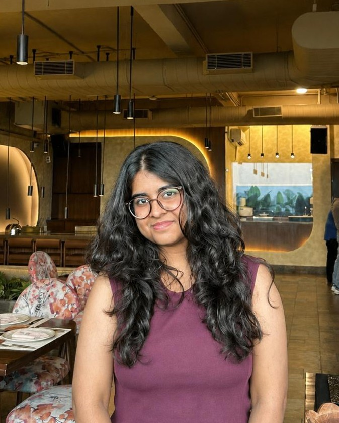

well, hello there! ↘
Jack of all trades,
master of fun.
The name's Samriddhi Bhutani. I can't really describe myself in one sentence. Different people know me for different things, and defining myself by just one skill or my education wouldn't do me justice.
So, why not explore and find out more about me?
Enter my world ↗
that's me!
SPIRIT
ALERT ✳
HAKUNA
MATATA.
01 / THE PERSON
Pieces of me.
Click a card. There's more than meets the eye.
01 / EDUCATION
The computer nerd 😬
Click to unfold ↗
02 / BEYOND THE SCREEN
Not just a CS student 🌟
There's more ↗
03 / MY PERSONALITY
Insight on my thoughts 🫧
Proceed with curiosity ↗
04 / THE LEARNING CURVE
Work in progress ↗
My actual skill level
02 / THE ARCHIVE
Things I've done.
I previously freelanced as a website developer for small businesses on Instagram. I built simple showcase websites, not full e-commerce platforms, to help businesses present their products and build customer trust. Working with people across India taught me about communication, responsibility and accountability. Talking about working with people, remember how i said i got into coding in the COVID era, yeah i also opened my own coding teaching platform, and taught 6-7 kids across India. Why? The motive was simple, agencies were charging lakhs for that, and not all can afford that, so i shared my knowledge at a fraction of their cost. The motive was never the money, but educating others. I've also worked as a wed designer for a mental health NGO (manamsante) along with a teammate, although that project was stopped in between due to personal reasons.
01 / CLIENT WORK
Novah Crochet ↗
Click to see more
02 / CLIENT WORK
Kalora Shop ↗
Click to see more
03 / PERSONAL PROJECT
You're looking at it! ↗
Click to see more
03 / THE TOOLBOX
What I know so far.
No fake proficiency percentages here.
Still learning. Still experimenting. Still building.
04 / OFF THE SCREEN
A peek into my life.
A little digital photo diary. Click a picture to expand it.
Collect moments, not just milestones. ↗
05 / THE SAMRIDDHI FILES
Let's play. ✳
Experimenting-
Want some very random info about me? Click the button and see what you get.
Click the button to reveal random facts about me :))
STAY CURIOUS
BUILD STUFF
REPEAT
06 / THE END (OR THE BEGINNING?)
Got an idea?
Say hello!
For collaborations, conversations or just to share something interesting.
HAKUNA MATATA ✳
Stay curious. Live a little. Make things happen.